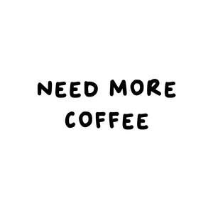

Trade Mark Journal No.2025/025 20 June 2025
UK00004177826 22 March 2025 (25)

- Class 25
- Bib shorts; Jeans; Shorts [clothing]; Fleece shorts; Denim pants; Dress pants; Denim jeans; Leggings [trousers]; Bib tights; Nappy pants [clothing]; Boy shorts [underwear]; Trousers shorts; Blue jeans; Men’s dress socks; Shorts; Wristbands [clothing]; Capri pants; Sweat shorts; Corduroy pants; Camouflage pants; Maternity shorts; Chino pants; Sweat pants; Pirate pants; American football pants; American football shorts; Babies pants [clothing]; Knitted underwear; Mens underwear; ; Headbands for clothing; Headbands; Mens trousers; Weatherproof pants; Jogging pants; Corduroy trousers; Handwarmers [clothing]; Mitts [clothing]; Gloves for apparel; Camouflage gloves; Wetsuit gloves; Leather pants; Snow pants; Gloves as clothing; Gloves [clothing]; Fur hats; Knitted baby shoes; Mittens; Knitted gloves; Snowboard mittens; Booties; Fascinator hats; Fake fur hats; Bootees (woollen baby shoes); Cashmere scarves; Cloche hats; Legwarmers; Ushankas [fur hats]; Baby boots; Earmuffs; Woollen socks; Cowls [clothing]; Scarves; Valenki [felted boots]; Mens socks; Scarfs; Snoods [scarves]; Bonnets [headwear]; Fur muffs; Ear warmers being clothes; Neck scarves [mufflers]; Mufflers [neck scarves]; Mufflers as neck scarves; Visors [headwear]; Visors being headwear; Headbands; Neck scarves; Woollen tights; Sock suspenders; Visors [hatmaking]; Head sweatbands; Fur cloaks; Hoods [clothing]; Belts for clothing; Belts [clothing]; Visors [clothing]; ; Bottoms [clothing]; Trunks being clothing; Drawers [clothing]; Drawers as clothing; Ties [clothing]; Muffs [clothing]; Fabric belts [clothing]; Pockets for clothing; Chaps (clothing); Braces for clothing; Socks; Socks and stockings; Anklets [socks]; Ankle socks; Footless socks; Trouser socks; Sweat-absorbent socks; Non-slip socks; Anti-perspirant socks; Bed socks; Yoga socks; Thermal socks; Tennis socks; Socks for men; Sports socks; Water socks; Pop socks; Inner socks for footwear; American football socks; Japanese style socks (tabi); Insoles [for shoes and boots]; Insoles for shoes and boots; Knee-high stockings; Slippers; Japanese style socks (tabi covers); Shoes; Socks for infants and toddlers; Esparto shoes or sandles; Tongues for shoes and boots; Sweat-absorbent stockings; Stockings (Sweat-absorbent - ); Stockings [sweat- absorbent]; Underwear; Pullstraps for shoes and boots; Stockings; Shoes for leisurewear; Hosiery; Slip-on shoes; Heel pieces for stockings; Stockings (Heel pieces for -); Esparto shoes or sandals; Pedicure slippers; Waterproof shoes; Sandals and beach shoes; Tights; Hiking shoes; Underwear (Anti-sweat -); Anti-sweat underwear; Foam pedicure slippers; Underpants; Insoles for footwear; Sneakers [footwear]; Rubber shoes; Shoe soles; Slipper soles; Heel protectors for shoes; Footwear soles; Soles for footwear; Foot volleyball shoes; Shoes for foot volleyball; Wooden shoes [footwear]; Sweat-absorbent underclothing [underwear]; Jockstraps [underwear]; Ankle boots; Sneakers; Sweat- absorbent underwear; -- shoes; High- heeled shoes; Leather slippers; Russi an felted boots (Valenki); Soccer shoes; Mountaineering shoes; Sandals; Flip-flops for use as footwear; Boots; Hidden heel shoes; Knee warmers [clothing]; Footless tights; Jogging shoes; Dress shoes; Leather shoes; Tennis shoes; Ballet shoes; Walking shoes; Shoes soles for repair; Athletic shoes; Basketball shoes; Running shoes; Volleyball shoes; Dance shoes; Snowboard shoes; Canvas shoes; Wooden shoes; Silk scarves; Neck tube scarves; Neck scarfs [mufflers]; Shawls; Shawls and headscarves; Shawls and stoles; Shawls [from tricot only]; Capelets; Shoulder wraps [clothing]; Shoulder wraps for clothing; Golf trousers; Casual trousers; Trousers for sweating; Slacks; Warm-up pants; Undershirts; Khakis; Skirt suits; Rugby shorts; Overalls; Tracksuit bottoms; Cycling pants; Nurse pants; Trousers of leather; Dress suits; Cargo pants; Trousers; Stretch pants; Lounge pants; Ski pants; Sleep pants; Hunting pants; Track pants; Horse-riding pants; Tap pants; Wind pants; Sports pants; Pants (Am.); Rain trousers; Riding trousers; Ski trousers; Waterproof trousers; Pajama bottoms; Padded pants for athletic use; Short trousers; Pantaloons; Trunks [underwear]; Infants trousers; Trouser straps; Jogging bottoms [clothing]; Briefs [underwear]; Panties; Culotte skirts; Trousers for children; Baselayer bottoms; Sliding shorts; Walking shorts; Leggings [leg warmers]; Knickers; Boxer shorts; Underpants for babies; Tennis shorts; Maternity underwear; Thong sandals; Sweat bottoms; Yoga bottoms; Long underwear; Tuxedo belts; Short petticoats; Short sets [clothing]; Long johns; Cycling shorts; Padded shorts for athletic use; Board shorts; Walking breeches; Skirts; Walking boots; After ski boots; Footwear for men and women; Footwear [excluding orthopedic footwear]; Underclothing for women; Underwear for women; Suspender belts for women; Suspender belts for men; Ballroom dancing shoes; Teddies [undergarments]; Leather belts [clothing]; Waterproof boots; Boxer briefs; Collars for dresses; .
Engin Ceri